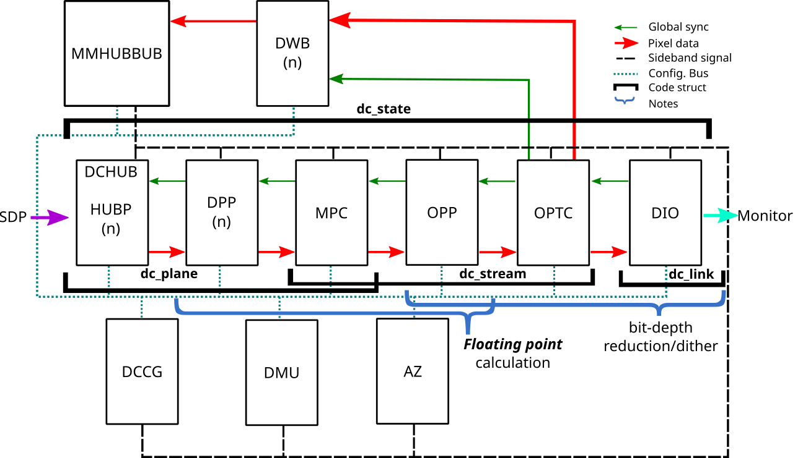
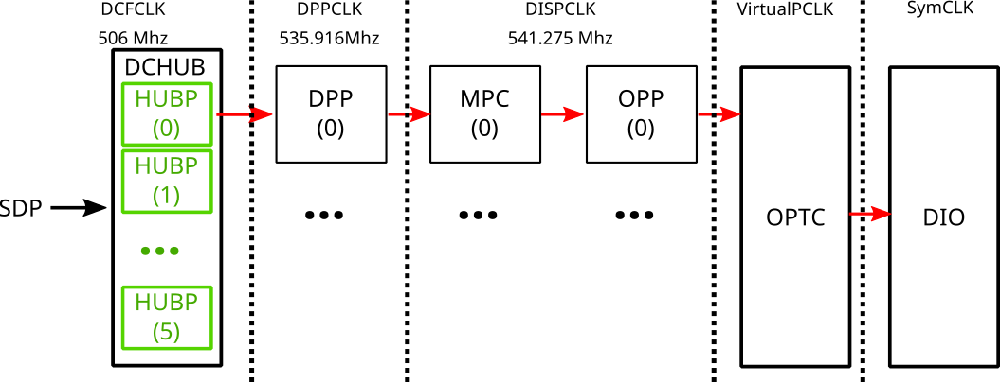
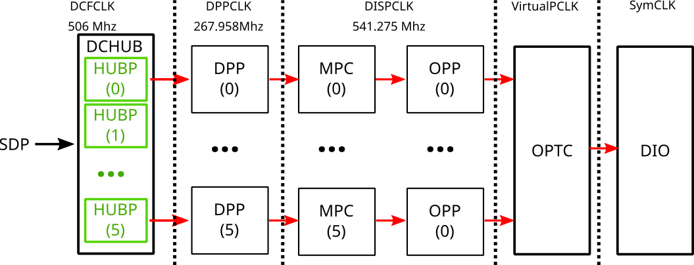
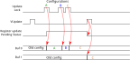

Display Core Next (DCN)¶
To equip our readers with the basic knowledge of how AMD Display Core Next (DCN) works, we need to start with an overview of the hardware pipeline. Below you can see a picture that provides a DCN overview, keep in mind that this is a generic diagram, and we have variations per ASIC.

Based on this diagram, we can pass through each block and briefly describe them:
Display Controller Hub (DCHUB): This is the gateway between the Scalable Data Port (SDP) and DCN. This component has multiple features, such as memory arbitration, rotation, and cursor manipulation.
Display Pipe and Plane (DPP): This block provides pre-blend pixel processing such as color space conversion, linearization of pixel data, tone mapping, and gamut mapping.
Multiple Pipe/Plane Combined (MPC): This component performs blending of multiple planes, using global or per-pixel alpha.
Output Pixel Processing (OPP): Process and format pixels to be sent to the display.
Output Pipe Timing Combiner (OPTC): It generates time output to combine streams or divide capabilities. CRC values are generated in this block.
Display Output (DIO): Codify the output to the display connected to our GPU.
Display Writeback (DWB): It provides the ability to write the output of the display pipe back to memory as video frames.
Multi-Media HUB (MMHUBBUB): Memory controller interface for DMCUB and DWB (Note that DWB is not hooked yet).
DCN Management Unit (DMU): It provides registers with access control and interrupts the controller to the SOC host interrupt unit. This block includes the Display Micro-Controller Unit - version B (DMCUB), which is handled via firmware.
DCN Clock Generator Block (DCCG): It provides the clocks and resets for all of the display controller clock domains.
Azalia (AZ): Audio engine.
The above diagram is an architecture generalization of DCN, which means that every ASIC has variations around this base model. Notice that the display pipeline is connected to the Scalable Data Port (SDP) via DCHUB; you can see the SDP as the element from our Data Fabric that feeds the display pipe.
Always approach the DCN architecture as something flexible that can be configured and reconfigured in multiple ways; in other words, each block can be setup or ignored accordingly with userspace demands. For example, if we want to drive an 8k@60Hz with a DSC enabled, our DCN may require 4 DPP and 2 OPP. It is DC’s responsibility to drive the best configuration for each specific scenario. Orchestrate all of these components together requires a sophisticated communication interface which is highlighted in the diagram by the edges that connect each block; from the chart, each connection between these blocks represents:
Pixel data interface (red): Represents the pixel data flow;
Global sync signals (green): It is a set of synchronization signals composed by VStartup, VUpdate, and VReady;
Config interface: Responsible to configure blocks;
Sideband signals: All other signals that do not fit the previous one.
These signals are essential and play an important role in DCN. Nevertheless, the Global Sync deserves an extra level of detail described in the next section.
All of these components are represented by a data structure named dc_state. From DCHUB to MPC, we have a representation called dc_plane; from MPC to OPTC, we have dc_stream, and the output (DIO) is handled by dc_link. Keep in mind that HUBP accesses a surface using a specific format read from memory, and our dc_plane should work to convert all pixels in the plane to something that can be sent to the display via dc_stream and dc_link.
Front End and Back End¶
Display pipeline can be broken down into two components that are usually referred as Front End (FE) and Back End (BE), where FE consists of:
DCHUB (Mainly referring to a subcomponent named HUBP)
DPP
MPC
On the other hand, BE consist of
OPP
OPTC
DIO (DP/HDMI stream encoder and link encoder)
OPP and OPTC are two joining blocks between FE and BE. On a side note, this is a one-to-one mapping of the link encoder to PHY, but we can configure the DCN to choose which link encoder to connect to which PHY. FE’s main responsibility is to change, blend and compose pixel data, while BE’s job is to frame a generic pixel stream to a specific display’s pixel stream.
Data Flow¶
Initially, data is passed in from VRAM through Data Fabric (DF) in native pixel formats. Such data format stays through till HUBP in DCHUB, where HUBP unpacks different pixel formats and outputs them to DPP in uniform streams through 4 channels (1 for alpha + 3 for colors).
The Converter and Cursor (CNVC) in DPP would then normalize the data representation and convert them to a DCN specific floating-point format (i.e., different from the IEEE floating-point format). In the process, CNVC also applies a degamma function to transform the data from non-linear to linear space to relax the floating-point calculations following. Data would stay in this floating-point format from DPP to OPP.
Starting OPP, because color transformation and blending have been completed (i.e alpha can be dropped), and the end sinks do not require the precision and dynamic range that floating points provide (i.e. all displays are in integer depth format), bit-depth reduction/dithering would kick in. In OPP, we would also apply a regamma function to introduce the gamma removed earlier back. Eventually, we output data in integer format at DIO.
AMD Hardware Pipeline¶
When discussing graphics on Linux, the pipeline term can sometimes be overloaded with multiple meanings, so it is important to define what we mean when we say pipeline. In the DCN driver, we use the term hardware pipeline or pipeline or just pipe as an abstraction to indicate a sequence of DCN blocks instantiated to address some specific configuration. DC core treats DCN blocks as individual resources, meaning we can build a pipeline by taking resources for all individual hardware blocks to compose one pipeline. In actuality, we can’t connect an arbitrary block from one pipe to a block from another pipe; they are routed linearly, except for DSC, which can be arbitrarily assigned as needed. We have this pipeline concept for trying to optimize bandwidth utilization.

Additionally, let’s take a look at parts of the DTN log (see ‘Display Core Debug tools’ for more information) since this log can help us to see part of this pipeline behavior in real-time:
HUBP: format addr_hi width height ...
[ 0]: 8h 81h 3840 2160
[ 1]: 0h 0h 0 0
[ 2]: 0h 0h 0 0
[ 3]: 0h 0h 0 0
[ 4]: 0h 0h 0 0
...
MPCC: OPP DPP ...
[ 0]: 0h 0h ...
The first thing to notice from the diagram and DTN log it is the fact that we have different clock domains for each part of the DCN blocks. In this example, we have just a single pipeline where the data flows from DCHUB to DIO, as we intuitively expect. Nonetheless, DCN is flexible, as mentioned before, and we can split this single pipe differently, as described in the below diagram:

Now, if we inspect the DTN log again we can see some interesting changes:
HUBP: format addr_hi width height ...
[ 0]: 8h 81h 1920 2160 ...
...
[ 4]: 0h 0h 0 0 ...
[ 5]: 8h 81h 1920 2160 ...
...
MPCC: OPP DPP ...
[ 0]: 0h 0h ...
[ 5]: 0h 5h ...
From the above example, we now split the display pipeline into two vertical parts of 1920x2160 (i.e., 3440x2160), and as a result, we could reduce the clock frequency in the DPP part. This is not only useful for saving power but also to better handle the required throughput. The idea to keep in mind here is that the pipe configuration can vary a lot according to the display configuration, and it is the DML’s responsibility to set up all required configuration parameters for multiple scenarios supported by our hardware.
Global Sync¶
Many DCN registers are double buffered, most importantly the surface address. This allows us to update DCN hardware atomically for page flips, as well as for most other updates that don’t require enabling or disabling of new pipes.
(Note: There are many scenarios when DC will decide to reserve extra pipes in order to support outputs that need a very high pixel clock, or for power saving purposes.)
These atomic register updates are driven by global sync signals in DCN. In order to understand how atomic updates interact with DCN hardware, and how DCN signals page flip and vblank events it is helpful to understand how global sync is programmed.
Global sync consists of three signals, VSTARTUP, VUPDATE, and VREADY. These are calculated by the Display Mode Library - DML (drivers/gpu/drm/amd/display/dc/dml) based on a large number of parameters and ensure our hardware is able to feed the DCN pipeline without underflows or hangs in any given system configuration. The global sync signals always happen during VBlank, are independent from the VSync signal, and do not overlap each other.
VUPDATE is the only signal that is of interest to the rest of the driver stack or userspace clients as it signals the point at which hardware latches to atomically programmed (i.e. double buffered) registers. Even though it is independent of the VSync signal we use VUPDATE to signal the VSync event as it provides the best indication of how atomic commits and hardware interact.
Since DCN hardware is double-buffered the DC driver is able to program the hardware at any point during the frame.
The below picture illustrates the global sync signals:

These signals affect core DCN behavior. Programming them incorrectly will lead to a number of negative consequences, most of them quite catastrophic.
The following picture shows how global sync allows for a mailbox style of updates, i.e. it allows for multiple re-configurations between VUpdate events where only the last configuration programmed before the VUpdate signal becomes effective.
